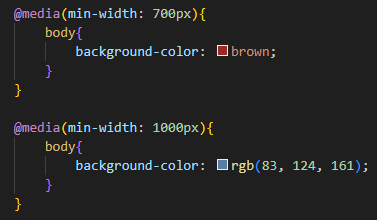

MEDIA QUERIS
Diferentes resoluciones de pantallas segun el dispositivo
La resolución de pantalla es la cantidad de píxeles que se pueden mostrar en un monitor, TV o cualquier tipo de pantalla. Dicho de otra forma, las pantallas están compuestas de píxeles, y son estos los que indican cuál es la resolución de una pantalla.
De la cantidad total de píxeles del teléfono, tableta, televisor o monitor, dependen las resoluciones de video que se pueda llegar a alcanzar. Los smartphones usualmente usando resoluciones como 1080p (Full HD) y 1440p (QHD) en modelos de alta gama, mientras que las computadoras portátiles y monitores comunes oscilan entre HD (720p) en modelos económicos y 4K UHD (2160p) en equipos de gama alta.

Media Query
¿Que es?
Las media query son propias de css, nos permiten generar diferentes estilos, acomodos, etc, del contenido de la pagina segun su resolución de pantalla o el ancho del viewport del navegador. Las media query se utilizan para lo siguiente:
Para aplicar estilo incondicionalmente utilizando reglas en css : @media o @import para poder segementar medios especificos para style, link, source y otros html con el atributo @media =
Breakpoints
Puntos de Interrupcion
Son las medidas de anchura en donde se realizan saltos para el diseño responsive y se aplican los estilos CSS concretos para unas determinadas media queries. Es decir, los breakpoints son los saltos en los que la pantalla cambia de layout.
- Pequeño 480px - 576px: Dispositivos móviles en orientación vertical
- Pequeño 576px - 720px: Dispositivos móviles en orientación horizontal incluyendo Tablets
- Mediano 720px - 834px: Tablets en orientación vertical
- Mediano 992px - 1024px: Tablets en orientación horizontal
- Grande 1200px - 1044px: Laptos
- Grande 1440px: Monitores d escritorio y pnatllas aun mas grandes
Ejemplos de Media Queries en Código
@media(min-width: 1000px){
body{
background-color: rgb(231, 236, 240);
}
}@media (min-width: 992px) {
body {
font-size: 16px;
}
}@media (max-width: 767px) {
.sidebar {
display: none;
}
}